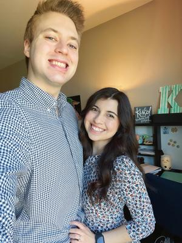

About Me

{kind=link}
My Wife
I am happily married with my high school sweetheart, Nancy Keilany Lightsey. We have been together for over 8 years now, and have been married for just over two years. My wife is also pursing a Ph.D. alongside me at Notre Dame, but not in philosophy! She is interested in biomedical engineering/bioengineering and is thus pursing a Ph.D. in that field. She also went to Texas A&M for her undergraduate studies, but she also obtained a masters degree from Johns Hopkins University. She is the kindest, loveliest, and most compassionate person you will ever meet. She is a perfect example of God’s grace in my life, and I immensely grateful for this grace everyday.
{kind=link}
My Dog
My wife and I have a dog named Bilbo (named, of course, after J.R.R. Tolkien’s character from The Hobbit [Tolkien is by far my favorite fiction author]). He is roughly a year-and-a-half old and loves three things: Food, cuddling, and sleep (in that order…). He is very precious to me and my wife, and we plan to get him more brothers or sisters whenever we get our own house! See the cute little guy on the left.
My Hobbies
In my free time, I like to read (a lot), blog, YouTube channel, cook, watch movies and go hiking with my wife, and go running. When I read, I read mainly philosophy and theology books, but sometimes math, science, literature, and grammar/language books. I love cooking all sorts of food and I am attempting to get better. My favorite dish to cook is a Beef Wellington, which I made last Christmas and was utterly scrumptious. My favorite movies are The Lord of The Rings (all three) and any movie directed by Christopher Nolan. I enjoy hiking and running around beautiful areas, preferably near the water.
I run my blog and YouTube channel when I have time, but that is not as often as I would like. My blog is avalaible on my website here. This blog serves as a place for me to share my thoughts on different philosophical and theological topics. I intend mainly to discuss books I am reading at the moment, or any new idea with which I am toying around in my mind. None of my thoughts here should be viewed as my final opinion on the matter, nor even what I hold to be true. My goal is too allow the reader (you) to share in my thought process and perhaps give the reader some new ideas. Along with this, I will sometimes write about my experience as a Ph.D. student in philosophy at the University of Notre Dame.
I also have a YouTube Channel by the name of The Variegated Philosopher. My channel will cover similar topics as this blog, but will serve the purpose of more carefully documenting my Ph.D. experience through videos/vlogs and the like. Moreover, this blog will allow me to cover topics I do cover on my channel but in more detail. So, if you like what you read here, please check out my channel!
My Passions
As you may be able to glean from my pursuing a Ph.D. in philosophy, I am intensely passionate about being a professional philosopher as a philosophy professor at a university. I am a Christian, so I am particularly interested in philosophical theology and different topics of metaphysics that intersect with various Christian truths (e.g. how the topics of causation, time, and constitution intersect with the incarnation, the Trinity, providence, and divine action). I also am deeply committed to helping other Christians understand that Christianity is in no way antithetical to the intellectual life (as is commonly believed today in the western world); rather Christianity nourishes the intellectual life and allows it to flourish. Thus, not only do I want to teach at a university, I would like to guide or teach other Christians about theology and philosophy at whatever church my family attends. Speaking of my family, which is another passion of mine, my wife and I plan to have kids sometime in the future (hopefully soon, but not too soon!). We are trying to decide when the best time for that would be, given that we both are getting Ph.D.’s over the next five or so years, but we hope to start our family in the next couple of years. Finally, I believe in the absolute value of education, learning, and knowledge (as may be evinced from my desire for a philosophy Ph.D.!). From the triad of supreme values identified by scholars throughout the centuries—viz. truth, beauty, and goodness —truth has had the most enthralling effect on me. While I of course appreciate the other two for what they are, truth itself is the one to which I wish to dedicate my career and life’s work. So, I spend much of my time engaging in activities that allow me to be edified and enlightened and I hope to inculcate these values in my children so that they too can appreciate the value of the truth and of education proper.